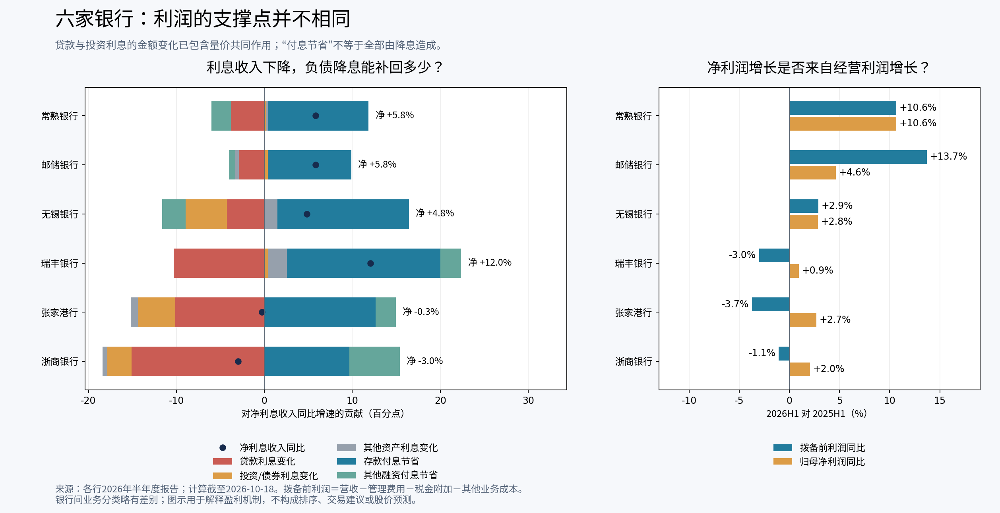

六家银行：息差、信用成本与普通股回报的首轮深研
研究截止：2026年10月18日。此为公开节选版，市场价格与历史估值数据暂不分发。财务基准：2026年半年报及其2025年同期比较；资本及资产质量基准为2026年6月末，并单列已核实后续事件。
> 公开预览范围（2026-10-20）：保留原稿的财报机制分析；暂不公开行情供应商的价格列、历史估值图表及相关下载。第9节以范围说明替代，原始私有稿保持完整。此版不是原稿的逐字节副本，也不是更新后的投资结论。
先说结论
六家公司的归母净利润均增长，但经营机制明显不同。常熟的拨备前利润与归母净利润均约增长10.6%；邮储的拨备前利润增长更快，但新增贷款损失吸收了很大一部分。瑞丰、张家港、浙商的拨备前利润均下降，净利润增长分别受到税项、拨备减少或营业外改善的支撑。无锡的经营增长较平稳，但投资收益和贷款拨备的内部变化不能被总量掩盖。
这不构成简单的优劣排序。常熟的高收益小微模式面临资产收益下行和可转债摊薄；邮储有真实的负债与规模优势，也有特殊代理成本及零售信用压力；其余四家需要逐一检验负债成本改善能否转为可持续、可分配的普通股利润。低PB本身没有完成这一步证明。
本轮六项均已完成原始半年报的关键章节、财务附注、资本结构及价格口径核验，并做了可复算的盈利桥、资本增长桥和历史价格适配。尚未完成的是逐季信用迁徙/贷款批次数据、逐项债券久期与估值压力测试、三年原始财报逐期重建及完整分红再投资回报。以下结论是有条件的首轮机制判断，不称为全部深研结案。
1. 对象、市场与覆盖深度
所有观察对象均为A股，人民币报价；邮储及浙商另有H股。本报告没有把H股价格或港币混入A股估值，也没有把A股价格乘A+H总股本称作真实全公司市场价值。
| 对象 | 市场代码 | 已完成的对象特异性检验 | 仍需补齐 |
|---|---|---|---|
| 常熟银行 | 601128.SH | 小微收益/增量对公、息差桥、转债普通股影响、资本及中期分红 | 小微新投放批次风险；村镇整合后单位经济 |
| 邮储银行 | 601658.SH | 代理成本、量价桥、零售分项坏账、诉讼冲回/税项、CET1 | 代理费分档的实际存款结构；下一季零售新生不良 |
| 无锡银行 | 600908.SH | 债券处置依赖、贷款与债券拨备对冲、资本赎回 | 投资利润跨年可重复性；地区行业穿透 |
| 瑞丰银行 | 601528.SH | 息差改善与信用压力并存、税项、区域集中、二级资本 | 逾期到不良迁徙和重组回收；新增贷款收益 |
| 张家港行 | 002839.SZ | 费用/拨备支撑、零售扩张、逾期结构、永续债赎回 | 同比同口径迁徙；信用成本下降能否持续 |
| 浙商银行 | 601916.SH | 零售去风险、债券拨备冲回、CET1/AT1区分、系统重要性规则 | 贷款处置后的新生风险；资本新报表及附加要求时间确认 |
公开预览不提供价格列与第三方历史行情序列；这些材料的再分发授权尚未确认。
本次检索没有取得已披露的2026三季报。常熟、无锡、浙商的第三方日历显示拟10月31日披露，瑞丰拟10月29日、张家港拟10月30日；预约日期可能变动，不能当作实际披露。邮储官网财报目录检索所见最新为2026中期报告，未据旧年度日历推定本年三季报日期。
2. 共同机制：净利息增加，未必意味着资产回报回升

已审原图已随包提供并按原 SHA 校验；原文字替代始终保留，图片加载失败不影响全文。
原图校验
e82ab0dc515ac5851b498a6c1e80a2478cbc362aa85a9772f9d1e206cd73f386左图按“贷款利息变化＋投资/债券利息变化＋其他资产利息变化＋存款付息节省＋其他融资付息节省”还原净利息收入变化。金额变化同时包含规模与利率，不把它们全部冒充为纯降息效应。右图使用统一的可复算拨备前利润口径：营收减业务管理费、税金附加、其他业务成本，尚未扣信用/其他资产减值与营业外损益。
2.1 从资产负债表看增长来源
| 对象 | 贷款余额/亿元 | 半年贷款增幅 | 半年存款增幅 | H1贷款收益率 | H1存款付息率 | H1净息差 |
|---|---|---|---|---|---|---|
| 常熟银行 | 2,736.0 | 6.79% | 6.61% | 4.78% | 1.53% | 2.48% |
| 邮储银行 | 102,669.5 | 6.41% | 5.42% | 2.96% | 0.98% | 1.63% |
| 无锡银行 | 1,815.3 | 6.39% | 8.72% | 3.23% | 1.42% | 1.36% |
| 瑞丰银行 | 1,468.2 | 3.97% | 6.19% | 3.31% | 1.50% | 1.49% |
| 张家港行 | 1,570.8 | 5.88% | 6.16% | 3.24% | 1.47% | 1.35% |
| 浙商银行 | 20,101.2 | 4.55% | 6.55% | 3.45% | 1.55% | 1.56% |
口径限制：常熟、无锡、瑞丰、张家港的管理分析贷款/存款余额通常不含应计利息，邮储、浙商列示资产负债表项目含应计利息；故本表主要看各行内部变化，不用其绝对存贷比做排名。各行净息差计算的资产范围略有不同，浙商明确对交易性资产及对应融资作调整。无锡贷款、债券等平均余额的披露分类也不应强行视为完全一致。
六家贷款利息收入全部同比下降，存款付息额全部下降。其中常熟和邮储仍增长净利息收入约5.8%，瑞丰增长12.0%；张家港接近持平、浙商下降3.0%。下一阶段的关键并非“存款成本能否下降”这一已发生的事实，而是降幅能否继续快于存量贷款重定价，以及新增规模会否带来更多资本与信用成本。
3. 常熟银行：高收益小微模式，能否继续变成普通股的高回报？
关键问题。 贷款收益率下行时，高息差、费用效率和扩表能否守住ROE；增量资产是否仍来自最具优势的小微业务；60亿元可转债如何改变每股结果？
已经看到的正面证据。 H1归母净利润21.78亿元，同比增长10.64%；统一口径拨备前利润43.52亿元，同比增长10.64%；披露年化ROE13.34%，同比持平。这比仅靠少提拨备取得增长更有说服力。净利息收入49.10亿元增长5.82%，同时贷款减值损失15.39亿元增长15.41%，并非靠压低贷款拨备维持利润。不良率0.75%，较年末低1bp；拨备覆盖率431.94%，仍有较厚损失吸收存量。
实际计算。 贷款利息收入减少1.760亿元，投资利息增加0.084亿元，其他资产利息增加0.116亿元；存款利息支出减少5.288亿元，其他融资成本却增加1.025亿元。相加净利息收入增加2.702亿元。因此增收主要来自负债重定价及规模，而不是贷款端涨价。平均贷款收益率从5.33%降至4.78%，存款成本从1.96%降至1.53%。H1净息差2.48%；报表摘要对照2.53%是2025全年，不能把−5bp伪称同比H1变化。
竞争解释与反证。 较好的息差可能来自难复制的小微定价与作业能力，也可能是在承受更高风险和运营成本。贷款客户中100万元以下户数占比94.18%，平均单户45.58万元，支持真实的小额分散模式；但上半年个人贷款只增1.35%，个人经营贷约增1.16%，对公贷款增11.86%，新增量明显转向对公。存量高收益不代表新增资产仍有相同ROE。逾期率从1.92%到1.95%，贷款准备率从3.42%到3.23%，也说明不能只用不良率下降论证风险全面改善。扣非归母增速约6.40%，低于归母10.64%。
资本、分红与摊薄。 CET1净额增长6.43%，RWA增长8.28%，核心一级资本充足率11.60%降至11.40%。9月29日董事会按股东会授权批准中期每股0.13元，按半年末股本计算约占H1归母利润21.77%；已保存方案公告，但本轮未核实具体登记/支付实施日，不能写成已到账。
10月9日股份变动公告：截至9月30日仍有59.9942亿元常银转债未转股，转股价5.25元。静态全部转股将增加约11.4275亿股，约为现有股本31.3%；债转股增加核心资本，但不会凭空增加同等比例利润。H1披露基本EPS0.60元、稀释EPS0.49元，提醒估值不能只看未摊薄口径。该静态数量不是预测，未来分红及转股价调整会改变结果。
当前判断及可推翻条件。 经营利润增长和较高ROE具有实际支撑，值得继续检验其可持续性；不能直接用过去的13%以上ROE永久外推。若对公增量持续替代小微而收益率/信用成本恶化，或转股后资本闲置导致普通股ROE显著下降，低历史PB的吸引力会减弱。反过来，个人经营贷款恢复增长、贷后风险不恶化及资本利用效率稳定，会强化正面解释。
来源：常熟2026半年报主要数据、经营分析、贷款质量、财务附注47/52及其他权益工具；9月30日分红方案、10月9日转股公告。
4. 邮储银行：规模与负债优势确实有效，但净利增长尚未充分兑现为每股回报
关键问题。 低存款利率是否等于低的完整获客成本；规模增长赚到的利润能否覆盖零售信贷损失和资本消耗？
正面证据必须保留。 营收1924.82亿元，同比增长7.26%；净利息收入增长5.82%；手续费净收入189.82亿元，同比增长12.20%；统一口径拨备前利润907.70亿元，同比增长13.70%。存款成本由1.23%降至0.98%，抵消贷款收益率3.30%降至2.96%的影响；公司贷款不良率由0.54%改善到0.52%。这些说明经营改善是真实的，不能把全部净利增长归因为会计项目。
但负债成本需要完整看。 储蓄代理费及其他559.64亿元计入业务管理费，不在存款利息中。将其简单年化并除全行平均存款170529.20亿元，约相当于65.6bp额外费用；这仅是规模感测算，既不是合同费率，也不能直接当成所有存款的真实获客成本。代理存款的分档费率、保留备付金及成本分担均不同。0.98%的存款付息率不能直接拿去和其他银行的全口径融资成本比较。
信用成本是主要消耗项。 贷款减值376.66亿元，同比增长63.82%，按2×H1贷款减值/平均贷款计算的年化近似信用成本约0.75%。不良率0.95%升至1.00%，关注率1.57%升至1.73%，逾期率1.30%升至1.38%；个人不良率1.42%升至1.58%，其中房贷0.69%升至0.82%、其他消费贷1.54%升至1.80%。个人贷款贡献75.22%的不良余额。谨慎计提是管理层的解释之一，但这些资产质量变化表明，不能只用“主动加厚拨备”解释减值增长。
利润桥必须分清两项同值。 单位均为百万元：
| 项目 | 2025H1 | 2026H1 | 变化 |
|---|---|---|---|
| 营业利润 | 58113 | 54737 | -3376 |
| 营业外净额 | -115 | 2746 | 2861 |
| 税前利润 | 57998 | 57483 | -515 |
| 所得税费用 | 8583 | 5812 | -2771 |
| 集团净利润 | 49415 | 51671 | 2256 |
| 归母净利润 | 49228 | 51503 | 2275 |
| 少数股东利润 | 187 | 168 | -19 |
附注六41披露案件及诉讼预计损失本期冲回2,771百万元、上期计提1百万元，属于营业外支出冲回。附注六42所得税费用从8,583降至5,812百万元，差额也恰为2,771百万元，是另一条税项变化；包括减免税收入/利息抵扣及不可扣除项目的变化，不能把两项混成同一收入或现金流。营业利润−3,376＋营业外改善2,861＋所得税费用减少2,771＝集团净利增加2,256，归母及少数股东之和逐期与集团一致。两项均不直接等于当期收现。
扣非归母493.70亿元，对上期493.33亿元仅增约0.08%；基本EPS由0.43降至0.40元，年化ROE10.91%降至9.60%。总利润、每股利润、扣非利润传达的信号并不相同。
资本与分红。 CET1净额增长3.51%，RWA增长8.53%，CET1率10.53%降至10.04%。本行是系统重要性银行第二组，公开规则对应附加核心一级资本0.5个百分点；不能把超过基础底线的全部差额当成可派息空间。半年报中的2026中期每股0.133元是待股东会批准的方案；报告所列预期A股12月11日、H股2027年1月22日支付安排，批准状态和具体安排仍需以后续公告核验，本轮不当作已确定现金流。
当前判断及可推翻条件。 规模/负债/中收改善是正面基础，但目前尚不能仅靠归母+4.62%证明普通股盈利进入新上行期。最有辨识度的后续证据是零售新生不良和贷款减值回落、扣非利润及EPS恢复增长，同时CET1不继续被RWA增长侵蚀。若减值继续快于经营利润增长，低付息负债的优势会被吸收。
来源：邮储2026半年报第11–13、21–27页、贷款质量章节、资本管理、附注六39–42及十4.1。
5. 无锡银行：利润较稳，债券盈利与贷款拨备的内部变化更值得追踪
关键问题。 约12%的年化ROE来自能重复的客户银行经营，还是较多依赖债券处置及低税负？
正面证据。 归母净利润14.18亿元增长2.84%，统一口径拨备前利润20.75亿元增长2.90%，两者较接近。贷款增长6.39%，存款增长8.72%，不良率0.77%降至0.76%，拨备覆盖率404.95%，CET1率11.84%升至11.89%。本轮没有证据证明其资产质量已明显失控。
实际盈利拆分。 净利息收入增长4.82%，来自存款付息节省2.651亿元，抵消贷款利息减少0.756亿元、债券利息减少0.830亿元及其他融资付息增加0.474亿元等。净息差1.46%降至1.36%；H1披露贷款收益3.23%、存款成本1.42%、债券收益1.95%，提示用低收益债券扩大资产也可能稀释息差。
投资收益7.596亿元，占税前利润15.460亿元约49.1%；其中债权投资处置4.548亿元、其他债权投资处置0.715亿元，合计5.264亿元，约为税前利润34.0%。债券处置是银行正常经营的一部分，不自动等于监管定义“非经常性损益”；但如果持仓浮盈和市场利率顺风不能重复，报表ROE也不能无条件延续。
总信用减值仅增2.25%，贷款减值却由4.359亿元增至5.422亿元、增长24.37%；债权投资减值从计提1.129亿元变为转回0.511亿元，遮住了一部分贷款侧压力。关注率0.72%升至0.79%、逾期率约0.85%升至0.88%、重组贷款6.319亿元增至7.218亿元，构成需跟踪的反证。贷款不良和逾期绝对额、比率、分类口径要一起看。
区域集中与资本。 约77%的贷款在无锡；企业贷款占比74.24%，保证类贷款占比升至51.97%。租赁商务服务、制造业和批零占比较高，但不能未穿透便把租赁商务服务贷款全称为城投。半年内赎回约5亿元其他一级资本，因此总资本率13.83%降至13.57%不等于CET1恶化。资本表的239.32亿元是核心一级资本毛额；扣减7.46亿元后净额231.86亿元，才能与RWA1949.64亿元复算11.89%。
当前判断及可推翻条件。 稳定经营和资本积累对低估值构成支撑，疑问集中在投资利润重复性和贷款风险。若下一期贷款减值继续上升而投资减值不再转回，利润余量会缩小；若贷款关注/逾期稳定且非交易性的息费增长接力，则会增强盈利可持续性判断。补充核验的6月30日原始实施公告确认：2025年度末期每股0.13元于2026年7月7日支付，加上已派中期0.11元，2025全年每股0.24元。公开版不列基于行情报价计算的收益率；已派分红也不代表新买入仍可领取的现金。
来源：无锡2026半年报第5–6页、管理讨论损益与资产质量、附注利息净收入/投资收益/信用减值及资本表。
6. 瑞丰银行：息差改善是亮点，但仍需跨过信用与非息波动
关键问题。 存款降本带来的利息增长，能否抵消非息收入回落、地区信贷压力和税项波动？
正面证据。 H1净息差1.46%升至1.49%，存款成本1.94%降至1.50%；贷款增长3.97%，存款增长6.19%，净利息收入增长12.04%。贷款利息减少1.619亿元、投资利息增加0.059亿元等，存款付息减少2.731亿元及其他融资付息减少0.371亿元，最终净利息收入增加1.888亿元。扣非归母利润增长5.43%，好于归母增长0.94%，不能把所有税项或投资变化一概扣掉后称“真实利润”。
反证是经营利润仍下行。 非息收入下降33.77%，营收下降1.96%，统一口径拨备前利润下降3.02%，税前利润下降3.37%。所得税费用为−0.755亿元，上期为−0.381亿元，税收收益增加约0.374亿元，超过集团净利润增加的0.084亿元。附注40显示，本期法定税额2.081亿元，被非应税收入影响−2.835亿元、以前年度调整−0.163亿元等抵消；非应税收入包含国债/地方债利息、基金分红与权益投资收益。不能以正税率机械“标准化”银行，也不能保证本期负税额每年复制。
信用成本仍需加力。 不良率0.99%升至1.09%、关注率1.96%升至2.09%、逾期余额28.365亿元升至31.446亿元，重组贷款3.533亿元升至5.280亿元。贷款减值由6.903亿元增至7.998亿元、增长15.87%；总信用减值反而减少2.89%，部分来自债券和表外项目计提减少/转回。贷款准备余额增长8.45%但拨备覆盖率降至308.70%，说明不良增长更快；覆盖率高不等于风险趋势已好转。
绍兴收入占94.51%、其中柯桥74.29%，本地客户与产业链关系是获客优势，也把银行与区域产业周期绑定。2026H1关注类迁徙率19.21%，比较栏是2025全年13.72%；不能当成同时间跨度的同比增幅，但半年的迁徙已超过全年比较数，值得核对具体贷款批次与处置。
资本和分红。 CET1率12.65%降至12.58%；8月28日发行15亿元二级资本债，票面1.99%，补充总资本而不增加CET1。9月3日实施公告确认9月10日每股派0.10元，约占H1归母利润21.85%。分红已经减少普通股净资产，本报告仍将6月末账面值作为公开锚点，不冒充10月实时净资产。
当前判断及可推翻条件。 负债改善已经有效，但需确认其能否转化成风险调整后增长。贷款不良/关注/重组继续上升、减值只靠非贷款项抵消，会削弱低PB解释；若新增风险稳定并且净利息增量覆盖非息波动，当前资本缓冲和经营改善才更有说服力。
来源：瑞丰2026半年报财务摘要、利息/非息与贷款分析、资本表、财务附注40；8月二级资本债公告及9月分红实施公告。
7. 张家港行：降本与拨备减少保护了利润，业务端是否已触底仍未证实
关键问题。 净利润小幅增长究竟是持续效率改善，还是费用和信用成本释放暂时挡住营收下行？
盈利桥。 营收24.69亿元下降5.21%，净利息收入下降0.28%；业务管理费6.58亿元下降9.38%，使拨备前利润只下降3.73%。总信用减值6.094亿元，少计1.397亿元、下降18.65%，帮助税前利润增长；归母利润10.22亿元增长2.71%。降本是真实改善，但在收入尚未恢复时不能无限重复。
贷款收益率3.72%降至3.24%，存款成本1.80%降至1.47%，净息差1.43%降至1.35%。贷款利息少1.573亿元、投资利息少0.661亿元，存款付息节省1.963亿元，其他融资节省0.356亿元，仍不足以使净利息收入增长。个人贷款仅增约0.61%，对公增8.81%，对小微零售模式的增长质量构成检验。
贷款质量既有改善，也有尚未解除的风险。 不良率维持0.94%，关注率1.30%降至1.15%；逾期贷款绝对额26.754亿元升至27.400亿元，但因贷款规模增长，逾期率约1.80%降至1.74%。这些是正面证据。另一面，超过90天逾期余额约12.326亿元升至13.280亿元；摊余成本及OCI贷款合计减值从8.711亿元降至5.981亿元，含OCI贷款减值从计提0.556亿元转为转回0.896亿元。不能仅凭总不良率不变证明信用成本可以继续下降。
关注类迁徙率24.83%的比较栏是2025全年33.94%，不是2025H1，故本轮不据此声称迁徙同比改善。报表ROE4.87%是半年，简单乘二为9.74%，不是公司全年预测；已考虑永续债付息影响。
资本率下降的主要原因必须分层。 6月赎回20亿元其他一级资本债，总资本率13.35%降至11.79%，一级资本率12.19%降至10.64%；CET1仅从10.93%降至10.63%。这不是同样幅度的核心资本损失。CET1净额增3.40%、RWA增6.33%，所以仍有资本被扩表消耗的问题。半年末未取得已实施的2026中期分红证据，股东会给董事会授权不等于已经宣派。
当前判断及可推翻条件。 低估值需要收入恢复或可持续降本的支持。若关注率下降能进一步落实为90天以上逾期和新生不良下降，拨备减少可有经济依据；若后两者上行而减值继续减少，则必须降低对当期净利的可持续性判断。下一季的净利息收入、个人经营贷增长及贷款分类迁徙比净利增速更重要。
来源：张家港2026半年报主要指标、息差表、贷款质量、财务附注逾期贷款及信用减值、资本表与永续债说明。
8. 浙商银行：补充AT1缓解总资本，不能代替核心资本与零售信贷修复
关键问题。 对公与资产结构转型能否抵消零售风险和资产收益率下降；低PB包含的资本和盈利压力是否正在消退？
正面证据。 公司贷款不良率1.10%降至1.01%，存款成本1.88%降至1.55%，非息收入增长6.88%；不良贷款率维持1.36%，拨备覆盖率155.37%升至155.85%。银行已主动压降部分零售敞口和处置不良，并非没有修复动作。
但盈利和信用结构尚未同步改善。 贷款收益率4.02%降至3.45%，净息差1.69%降至1.56%；利息收入减少42.39亿元，利息支出减少35.45亿元，净利息收入少6.94亿元。统一口径拨备前利润下降1.07%，归母增长2.05%，扣非归母下降1.72%；营业外净额改善3.93亿元，是税前利润增加3.52亿元的重要支撑。
贷款减值144.57亿元、增长34.12%，债权投资减值却由计提17.08亿元变为转回21.26亿元，方向变化38.34亿元，使总信用减值仍下降。减值转回可以来自真实风险改善，但不能把债券减值转回等同于贷款风险消失。
个人贷款余额从4644.08亿元降至4331.89亿元，减少6.72%；个人不良余额从113.78亿元升至127.01亿元，增长11.63%，个人不良率2.45%升至2.93%。所以零售不良率上升既有缩表分母效应，也有不良绝对额上升。全行关注率2.36%升至2.69%、重组贷款率0.81%升至0.96%。贷款核销58.07亿元、转出75.01亿元，合计133.08亿元，也意味着稳定的不良率已经包含大额处置作用。
资本比股价折价更可能成为约束。 H1 CET1率8.40%降至8.37%，总资本率12.12%降至11.55%。8月发行300亿元其他一级资本债，票面1.95%，会改善一级/总资本，但CET1分子没有因此增加。若仅为演示而固定H1 RWA，新增AT1对应约1.39个百分点资本率，年票息5.85亿元；这是静态情景，不能声称是9月真实资本充足率。票息也要由未来利润承担，归母利润不全属于普通股。
浙商在2026年2月公布的2025年度系统重要性银行名单第一组，公开规则该组附加核心一级资本0.25个百分点。规则要求进入名单后经过一个完整自然年度，再于其后1月1日达标；按照2026首次进入的条件推算是2028年1月1日，但该推断仍需发行人监管资本披露确认。本轮不把附加要求误称为2026已立即生效，也不把公开基础要求当成全部内部/第二支柱约束。
不考虑留存利润、分红与资产调整，仅让H1 RWA增加10%，CET1率会由8.37%降至约7.61%。这不是预测或正式压力测试，作用是说明核心资本对分母增长的敏感度；AT1融资并没有取消这个约束。
2025年度每股分红0.131元，报告披露A股已于2026年6月26日完成、H股7月16日完成。公开版不列基于行情报价计算的收益率；过去分红不保证下一年度。半年报披露当时无2026中期利润分配方案。
当前判断及可推翻条件。 低PB不能先验当作资本安全垫。若零售不良绝对额、新生不良与贷款减值下降，同时CET1靠留存利润稳定，会强化修复论；若总资本率改善主要来自AT1而CET1继续消耗、贷款风险需持续处置，则折价可能有持续的经济理由。
来源：浙商2026半年报第8–10页、贷款质量、资本管理、减值与分红附注；8月8日资本债发行公告；系统重要性银行附加监管规定及2026名单。
9. 历史估值部分暂不公开
原稿此处包含第三方历史行情图表、价格与估值衍生计算。本公开预览暂不分发这些内容；不以替代数据或模拟图表填充。原始研究结论未在本次前端适配中重新核验。
10. 资本、信用成本与复核边界
| 对象 | CET1净额增幅 | RWA增幅 | H1 CET1率 | 年化贷款减值/平均贷款近似值 | 不良率年末→H1 | 覆盖率年末→H1 |
|---|---|---|---|---|---|---|
| 常熟银行 | 6.43% | 8.28% | 11.40% | 1.14% | 0.76%→0.75% | 451.25%→431.94% |
| 邮储银行 | 3.51% | 8.53% | 10.04% | 0.75% | 0.95%→1.00% | 227.94%→214.93% |
| 无锡银行 | 7.25% | 6.78% | 11.89% | 0.63% | 0.77%→0.76% | 414.91%→404.95% |
| 瑞丰银行 | 3.61% | 4.24% | 12.58% | 1.11% | 0.99%→1.09% | 326.51%→308.70% |
| 张家港行 | 3.40% | 6.33% | 10.63% | 0.78% | 0.94%→0.94% | 328.87%→325.07% |
| 浙商银行 | 1.59% | 1.95% | 8.37% | 1.45% | 1.36%→1.36% | 155.37%→155.85% |
贷款近似信用成本统一用2×半年贷款减值/披露平均贷款余额，包含各行贷款分类差异，不等于公司或监管正式公布的同口径信用成本率。不能把全部信用减值当成贷款信用成本，更不能把拨备覆盖率机械作为跨银行排名。
已执行的实际复核：六行净利息收入恒等式；拨备前利润到税前利润桥；所得税到集团净利润桥；集团=归母+少数股东及其两期变化桥；CET1净额/RWA对披露比率；同日两源收盘价；普通股与其他权益工具分母；三年历史序列日期/样本数；图表视觉检查。对无锡先扣资本扣减项再算CET1；对常熟区分可转债权益与普通股；对张家港区分半年度与年化ROE；对浙商区分后续AT1与CET1。
本轮不使用工业企业CFO/FCF阈值。银行存贷款变动会使经营现金流大幅波动，不能据此判“现金造假”或自由现金流充沛。分红能力应从盈利可持续性、监管资本、资产质量、母公司可分配利润与实际宣派程序判断。
仍未解决的实质限制：①大部分迁徙表比较的是半年与全年，未取得完整同比迁徙序列；②缺乏贷款批次/客户级别及抵押品重新估值数据；③未做证券投资组合逐券久期与压力估值；④历史PB是供应商序列，不是逐期财报自建；⑤未重建所有公司6月以后的普通股净资产及全部分红再投资收益；⑥季度新披露及最新监管个体要求需继续核验。缺口只限制相关判断，没有把可得财报证据一并丢弃。
下一轮最有信息量的触发证据是三季报及随后的资本/贷款质量披露，而不是再看一遍PE/PB榜。常熟看微贷增量与转债；邮储看零售减值和每股盈利；无锡看贷款拨备与投资收益；瑞丰看关注/逾期向不良迁徙；张家港看收入触底与90天以上逾期；浙商看个人不良绝对额和CET1。
11. 可复算文件与来源
本公开版提供财务披露的来源索引、原稿中保留的财报分析及配套盈利机制图。完整复算包、历史行情 CSV、行情回执、旧脚本和第三方 PDF 原件均不随站点分发。当前下载范围以页面说明为准。
原始财务报告
- 常熟银行2026年半年度报告（发行人或法定披露平台）
- 邮储银行2026年半年度报告（发行人或法定披露平台）
- 无锡银行2026年半年度报告（发行人或法定披露平台）
- 瑞丰银行2026年半年度报告（发行人原始PDF，新浪镜像）
- 张家港行2026年半年度报告（发行人原始PDF，新浪镜像）
- 浙商银行2026年半年度报告（发行人或法定披露平台）
后续资本/分红/转股与监管来源
- 无锡2025年度分红实施公告
- 邮储2026中期分红方案公告
- 常熟2026年中期利润分配方案
- 常熟截至9月末转股及股本变动
- 瑞丰2026年二级资本债发行完毕
- 瑞丰2026年半年度分红实施公告
- 浙商300亿元其他一级资本债发行
- 系统重要性银行附加监管规定
- 2026年2月公布的2025年度系统重要性银行名单，政府转载
财报更新检查
仅保留研究时点的财务分析。本公开预览不自动更新行情或财报，也不提供历史行情接口下载。